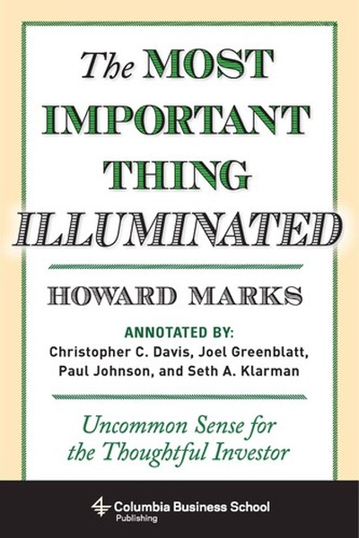

Library › Money & Finance
The Most Important Thing — Summary & Key Lessons

Howard Marks on second-level thinking, risk, cycles and the art of being right when it counts.
📖 OPEN THE FULL INTERACTIVE BREAKDOWN →🌐 Read it in Hindi, Hinglish, Gujarati, Tamil & 22 more languages — free, with audio.
💡 The Big Idea
The most important thing in investing is not a secret formula but a set of disciplines: second-level thinking (what everyone else thinks, and what happens next), understanding risk as uncertainty rather than volatility, respecting cycles, keeping a margin of safety, and above all knowing what you don't know. Being contrarian is not enough — you must be contrarian and right.
🧠 The 6 Key Lessons
Lesson 1: Second-Level Thinking Beats First-Level Thinking
Chapter 1: Second-Level Thinking
First-level thinkers ask 'what's a good company?' — second-level thinkers ask 'what does everyone else think, and what happens when they're wrong?' Marks argues that in markets where everyone has the same information, the only edge is thinking one step ahead of the consensus — and being right about the second step.
📖 Example: A first-level thinker buys a good company's stock because it's good. A second-level thinker asks: the stock already reflects its goodness — what must be true for it to rise further, and what would make everyone flee? That extra question is where the money is… Read the full example →
⚡ Do this: Before your next decision, write the consensus view, then write what must change for the consensus to be wrong. Act only with an answer.
Lesson 2: Risk Is Uncertainty, Not Just Volatility
Chapter 2: Understanding Risk
Most people equate risk with price swings; Marks defines it as the probability of permanent loss — which depends on the price you pay and the fragility of your position. Safe-looking assets bought at high prices can be riskier than volatile ones bought cheap. Risk is invisible until it isn't.
📖 Example: In 2007, 'safe' mortgage-backed securities felt riskless and were priced that way — then they went to zero. Meanwhile, a volatile stock bought at a fraction of intrinsic value could hardly lose permanently. The risk lived in the price and the structure, not… Read the full example →
⚡ Do this: For your biggest asset (portfolio, career, project), ask: 'What could cause permanent loss here, and what price am I paying for safety?'
Lesson 3: Cycles Are the Market's Heartbeat
Chapter 3: Cycles
Marks shows that markets, economies and human psychology move in cycles — not lines — because optimism feeds on itself until it becomes greed, then pain reverses the process. The smart investor doesn't fight cycles; she reads the position in the cycle and positions accordingly. The trend is never your friend forever.
📖 Example: Every bull market ends with 'this time is different' and every crash with 'it will never recover' — yet the cycle keeps turning. Those who recognized the late-1990s tech euphoria and the mid-2000s housing mania as late-cycle avoided the worst of what followed. Read the full example →
⚡ Do this: Locate your industry's current position in its cycle. If everyone believes the good times are permanent, that is the signal to build reserves.
Lesson 4: Market Moods Are Your Opponent
Chapter 4: Market Psychology
Marks dissects the emotional swings — euphoria and despair — that make prices overshoot in both directions. The crowd is not wrong all the time, but it is always wrong at extremes. Your job is to be the calmest person in the room when everyone else is either greedy or terrified.
📖 Example: When the crowd bids assets to absurd heights, it prices in perfection — the smallest disappointment crashes the price. When it abandons assets in panic, it prices in doom — even modest good news explodes them upward. Emotional extremes create the bargains… Read the full example →
⚡ Do this: Track your own emotional temperature on a decision: if you feel euphoric or terrified, delay the decision by 48 hours and re-check the numbers.
Lesson 5: Margin of Safety Is the Whole Game
Chapter 5: Margin of Safety
Because the future is unknowable, Marks insists on buying at prices so far below intrinsic value that being wrong still doesn't hurt you. Margin of safety is the difference between investing and gambling: it converts 'I hope I'm right' into 'even if I'm wrong, I survive'. Survival is the prerequisite for compounding.
📖 Example: A stock worth $100 bought at $50 gives you room to be half-wrong. Bought at $95, one disappointment wipes you out. Investors who insist on the first kind of entry survive decades; those who chase the second kind get one bad cycle and disappear. Read the full example →
⚡ Do this: Add a 30% margin to your next big commitment: if the plan is 30% worse than expected, can you still survive? If not, restructure it.
Lesson 6: Know What You Don't Know
Chapter 6: The Future
Marks's final discipline is epistemic humility: the future is not just hard to predict, it is unpredictable, and pretending otherwise is the root of most investment disasters. He advises preparing for a range of outcomes instead of forecasting a single one. Humility is not the absence of conviction; it is conviction with escape hatches.
📖 Example: Instead of asking 'will the market go up?', Marks asks 'what will I do if it goes up 30%, down 30%, or sideways?' — building plans for each. His funds survived multiple crises because they were designed for worlds that didn't happen, not just the one that did. Read the full example →
⚡ Do this: For your most important plan, write three scenarios (good, bad, ugly) with a pre-planned response to each. Review quarterly.
✅ 5-Step Action Plan
- Write the consensus view and the 'consensus is wrong' view before big decisions
- Audit your biggest asset for permanent-loss risk, not just volatility
- Locate your industry's cycle position and build reserves if late-cycle
- Delay emotionally extreme decisions by 48 hours
- Add a 30% survival margin and write three-scenario plans for key bets
⚠️ When This Doesn't Work
⚠️ When this doesn't work: Marks's contrarian discipline assumes deep expertise and long time horizons — amateurs copying 'buy cheap' without valuation skill can catch falling knives. And being permanently skeptical can make you miss decade-long trends. Contrarianism without a valuation framework is just stubbornness.
💀 The Graveyard Proves It
🏅 Long-Term Capital Management — Two Nobel Prizes, One Bankruptcy. Burn: $4.6B in 4 months. Read the full case study →
💬 Best Quotes from The Most Important Thing
- “You can't predict. You can prepare.”
- “Risk means more things can happen than will happen.”
- “The biggest risk is the one that feels like safety.”
Interactive version: mark lessons as read, listen in your language, share quote cards.